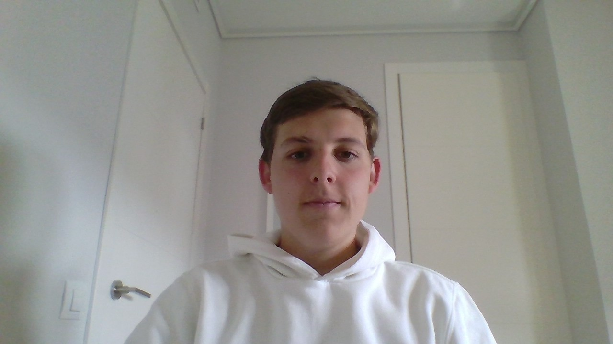

Información de interés
Soy una persona con ganas constantes de aprender cosas nuevas y muy relacionada con las nuevas tecnologías. También estoy muy capacitado para trabajar en cualquier plataforma o ámbito laboral ya que tengo amplios conocimientos en html y java.
Competencias
Empático, social, creativo, extrovertido, trabajador, iniciativa, adaptabilidad, adaptación a los cambios, con ganas de aprender
Idiomas
B2 en Inglés (con titulación Cambridge)
Contacto
telf: 628 216 335
mail: nicolasbustoos21@gmail.com
Nicolás Bustos Astorga
Educación
Grado Superior Desarrollo de Aplicaciones Multiplataforma
Campus Cámara FP (2020 - Actualidad)
Bachillerato
Colegio Jesús y María (2018 - 2020)
Formación complementaria
Programa 10SK
Para mejorar las competenciasen el ámbito laboral y para la mejorade la empleabilidad